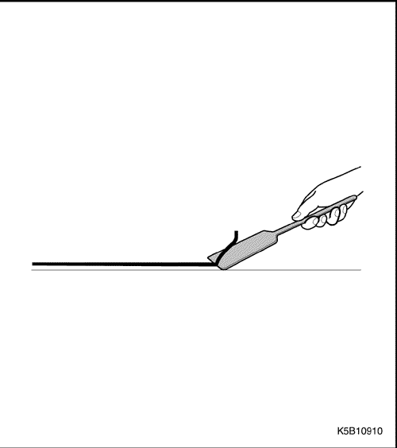

УПЛОТНЕНИЕ, ЗАМАЗКА И ШУМОИЗОЛЯЦИЯ
УПЛОТНЕНИЕ И ЗАМАЗКА
Примечание: Загерметизируйте следующие области во избежание прохождения воздуха, протечек воды и коррозии.
ПЕРЕДНИЙ ЩИТОК
- Стереть герметик.
- Заткнуть после окраски перед установкой отделки.
ПОЛ И ОТСЕК БАГАЖНИКА
ЗАДНИЙ ФОНАРЬ И ОТСЕК БАГАЖНИКА
КРЫША
- Удалить герметик, чтобы не мешать установке стекла.
- Удалить герметик для установки молдинга крыши.
КРЫША
КАПОТ И ЗАДНЯЯ ДВЕРЬ
- Не закрывать герметиком сливные отверстия для покраски.
- Удалить герметик вокруг углов.
- Закрыть герметиком сливные отверстия для покраски (3 места).
- Не закрывать герметиком сливные отверстия для воды (3 места).
|
ПЕРЕДНЯЯ И ЗАДНЯЯ ДВЕРЬ
|
Предел: мм
|
- Удалить герметик вокруг углов двери.
- Не закрывать герметиком отверстия крепления наружного молдинга желоба.
- Удалить герметик за петлями двери.
- Не закрывать герметиком сливные отверстия для воды в передней двери (3 места).
- Не закрывать герметиком сливные отверстия для воды задней двери (2 места).
- Подкладка, передняя дверь.
- Подкладка, задняя дверь.
- Уплотнитель (только для справки)
- Y Типичное сечение верхнего края передней и задней дверей (область желобка показана цифрой 9).
- Z Типичное сечение нижнего края передней и задней дверей.
- Нанести воск - дверная петля (передняя и задняя дверь)
- Не наносить смазку на эту область.
* Наносить только на петлю задней двери.
- На краске в этой области не должно быть герметика.
* Показан типичный пример, относится ко всем областям петель передней и задней дверей, справа и слева.
ШУМОИЗОЛЯЦИЯ
ОБЩЕЕ ОПИСАНИЕ
Шумоизоляция разработана и размещена таким образом, чтобы уменьшить вибрации и шум. Кроме того, она поддерживает конструкционную жесткость панели.
ПРОЦЕДУРА РЕМОНТА
-
- Снимите соответствующие части.
- Сиденья, ковровое покрытие.
- Обивка и др.
-
- Удаление поврежденной шумоизоляции.
- Аккуратно снять поврежденную шумоизоляцию стальным шпателем.
-
- Очистите и высушите.
- Перед наложением шумоизоляции тщательно очистить и высушить обрабатываемые области.
-
- Предварительно наложить новую шумоизоляцию на панели.
-
Примечание: Не закрывайте крепежные и сервисные отверстия.
-
- Приклеить шумоизоляцию.
- Нагреть шумоизоляцию горелкой или феном до липкости.
- Прижмите и приклейте к панели резиновым шпателем.
-
Примечание: Чтобы шумоизоляция была эффективной, она должна идеально прилегать к панелям и быть приклеена к ним.
-
Внимание! Будьте осторожны, не повредите при нагревании детали из композита.



- Установите соответствующие детали.
- Установка производится в порядке, обратном снятию.

- Оторвать для левой двери.
- Оторвать для правой двери.